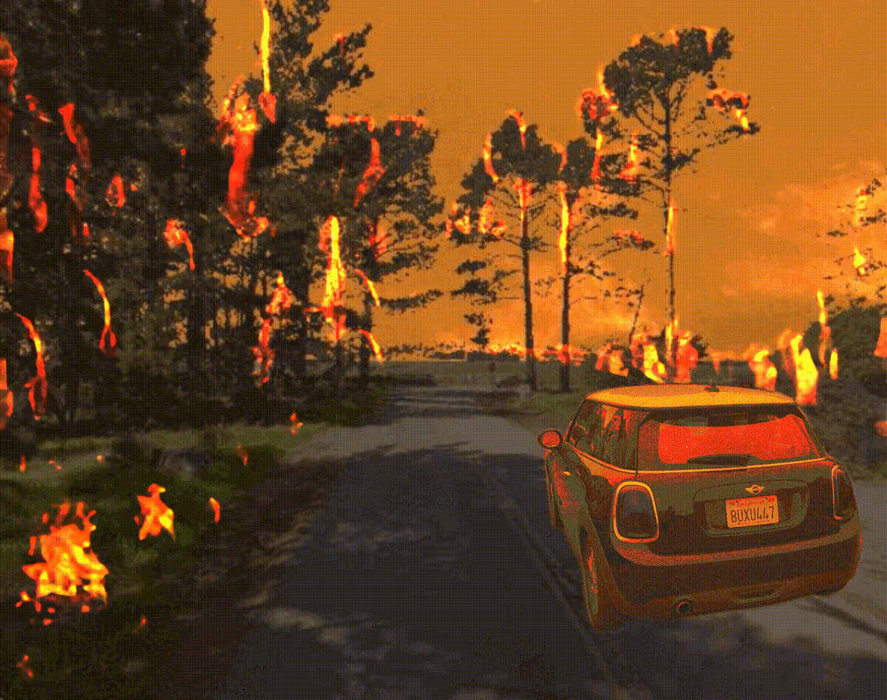

<div class="blurb">
    <h1>Project</h1>

    <h2>Project 1<em> Vehicle ridesharing for airport </h2>
    <p>Real-time, on-demand mobility systems have gradually revolutionised the transportation means. However, they
        continue to exhibit problems on inadequate vehicles at peak times. The popularity of ‘sharing’ may ultimately solve such
        problems as more passengers are served over time, particularly in high-demand (high-density) locations, thereby realising
        efficient, comfortable, and environmentally friendly transportation. While, existing sharing methods only arrange each order
        based on current information and do not apply subsequently received information to pursue more optimal route arrangements.
        Their research explicitly improves large-scale vehicle sharing methods using subsequent information and proposes the concept
        of a ‘wait time threshold’ for a vehicle, to manage the constraint contradictions in this process. Based on a representative
         highdemand case of serving all inbound and outbound passengers at Shenzhen Bao’ an International Airport, a system with
        consideration of subsequent information provides significant improvements comparing to a system without it.</p>
    <p>Collaborator: Yi Zhang</p>
        <p>Paper: Dynamic real-time high-capacity ride-sharing model with subsequent information
            <a href="https://trid.trb.org/view/1727013">https://trid.trb.org/view/1727013</a></p>
        <p>Dynamic Real-Time High-Capacity Ride Sharing Model for Airport Access
            <a href="https://trid.trb.org/view/1727013">https://trid.trb.org/view/1756670</a>
        </p>


    <p></p>
    <h2>Project 2 <em> Fire evacuation game </h2>
        
        <p>Wildfires have become a chronic catastrophe in California with a rapidly changing risk landscape. 
            We cannot rely solely on historical data and empirical solutions to form evacuation strategies; 
            it must be admitted that changes in fire propagation patterns and different human 
            behavior patterns depend on various variables (e.g., cellular network status,  road conditions, 
            communication method).

                Our research group has been investigating the socio-technological challenges faced by communities 
                at the Wildland Urban Interface (WUI). And this game is to create a cost-effective method for 
                stakeholders to participate in realistic evacuation drills,
                an efficient data collection framework for gaining insight into behavioral and physical uncertainties, 
                and a robust human-computer interaction platform for visualizing effective evacuation strategies.</p>

            <p>We provided two versions of game(Windows and Mac), you can download from this 
            <a href="https://github.com/bolinas-game/spatial_queue/releases/tag/game_20220815">link</a> and try it. For more information about background algorithm, 
                <a href="https://github.com/bolinas-game/spatial_queue"> Read more about it</a></p>
                <p>Collaborator: Prof. Kenichi Soga, Bingyu Zhao, Paola Lorusso</p>

    <p></p>
    <h2>Project 3 <em> Fire systhesis algorithm </h2>
        

        <p>
            Many existing example-based discrete texture synthesis methods are effective in generating textures that are similar with 
            exemplar. But for texture with many objects, they lead to the repetitive patterns in synthesized texture. 
            However, in some circumstances, people need to synthesize object with different shape and color, 
            especially for object with inhomogeneous texture and dynamic shape, such as fire or cloud. Our research proposed algorithm 
            that can automatically synthesize textures with different shape, but they also retain the same edge and texture
             attributes with input sample.
        </p>
        <p>Collaborator: Prof. Kenichi Soga, Kecheng Chen</p>


</div><!-- /.blurb -->